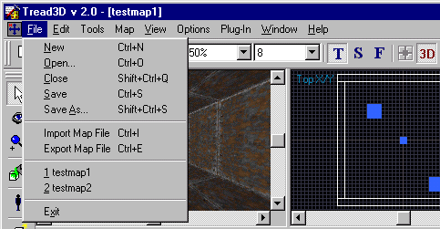
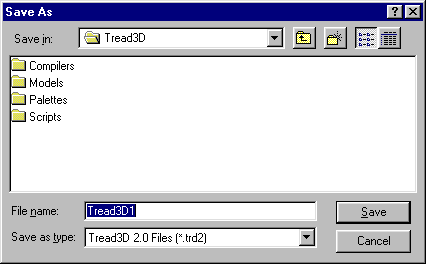
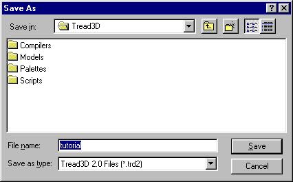

This is a walk-through as to how to save your work.
Before starting this tutorial you should first get acquainted with the basics of the "Tread3D" editor; the screen and the various commands that are available.
As in the "MAKING A BRUSH" tutorial start "Tread3D" and make a very basic brush.
Your screen should look like the one below.

Click on the "Files" menu and scroll down to "Save as".

A new window will now appear.
The "Save As" window should look like the one below.

Now just type in the name you want it to be; in our case lets call it "tutorial".
Your screen should look like the one below.

In addition to using the "Drop down menu" you could have used the "Save" button.
Remember this will not allow you to control the file name.

Thats all there is to it.
What you have done is saved your work as a ".trd2" file.
You will notice that you could have saved your work as a ".map" file under the "Export Map File" tab.
This is very useful when sharing work or making prefabs.
A note of caution; to make things easier in the future add a sub-folder or a group of sub-folders inside the Tread3D folder and give them a name related to the work you are doing. Now save all your work inside these new folders.
(This is just good housekeeping)